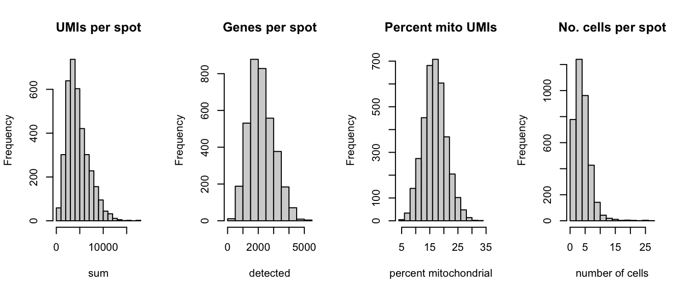
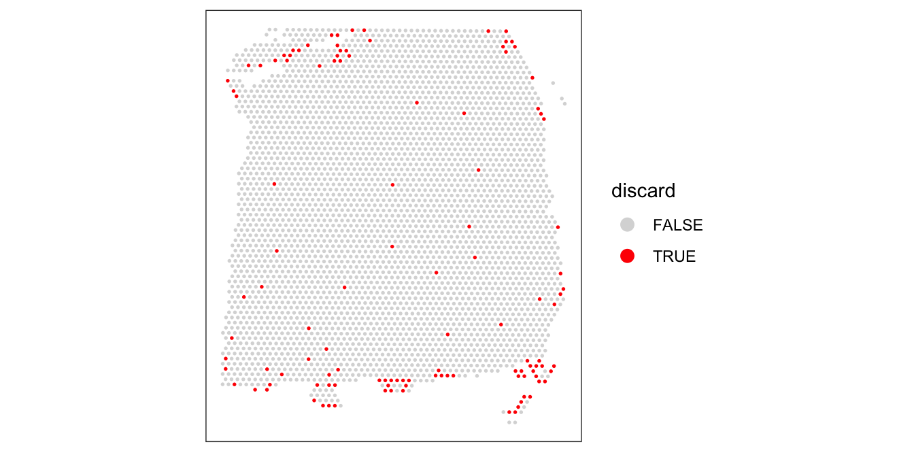
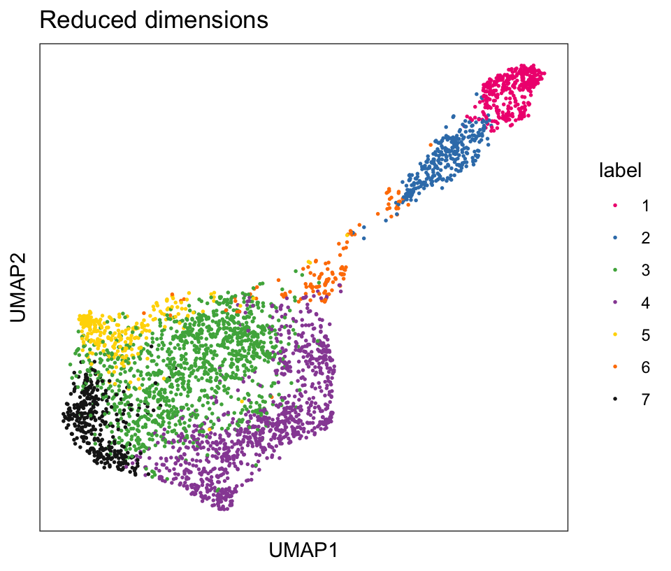
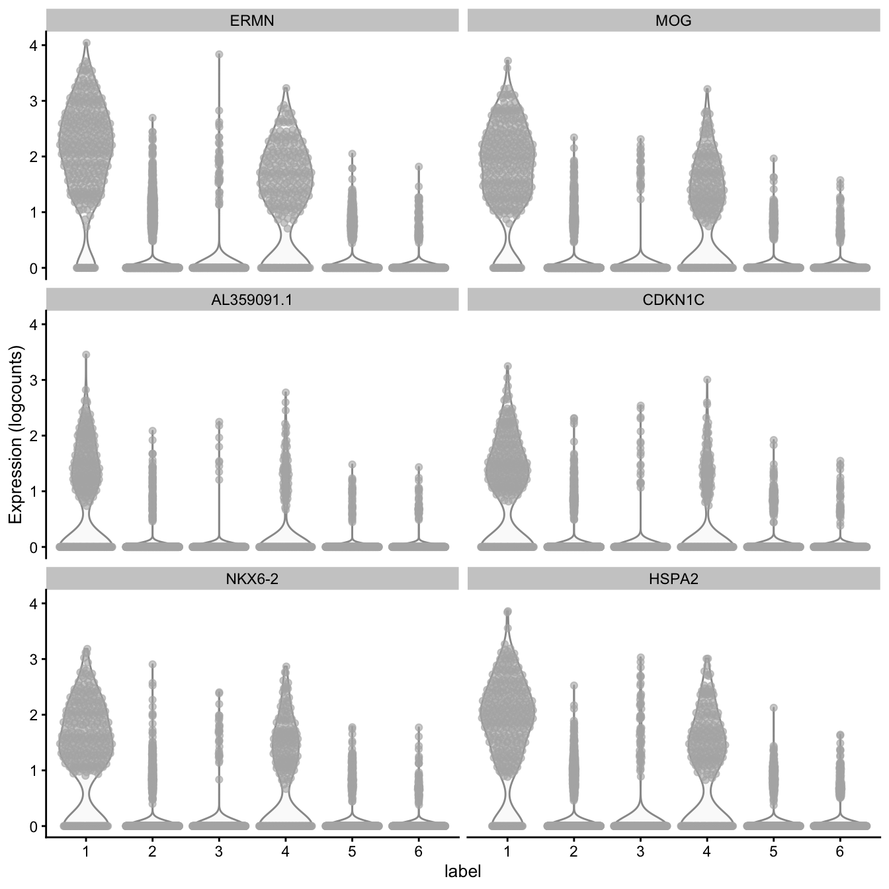

This workflow analyzes one sample of human brain from the dorsolateral prefrontal cortex (DLPFC) region, measured using the 10x Genomics Visium platform. This is a condensed version of the analyses shown in the individual analysis chapters in the previous part. For more details on the individual steps, see the previous chapters.
16.2 Description of dataset
This is a 10x Genomics Visium dataset generated from healthy human brain samples from the dorsolateral prefrontal cortex (DLPFC) region.
In the full dataset, there are 12 samples in total, from 3 individuals, with 2 pairs of spatially adjacent replicates (serial sections) per individual (4 samples per individual). The individuals and spatially adjacent replicates can be used as blocking factors. Each sample spans the six layers of the cortex plus white matter in a perpendicular tissue section.
For the examples in this workflow and the analysis chapters, we use a single sample from this dataset (sample 151673), to keep the computational requirements to compile the book manageable.
For more details on the dataset, see Maynard et al. (2021). The full dataset is publicly available through the spatialLIBD Bioconductor package. The dataset can also be explored interactively through the spatialLIBD Shiny web app.
16.3 Load data
Here, we load a single sample from this dataset (sample 151673), which is available as a SpatialExperiment object from the STexampleData package.
As an initial check, plot the spatial coordinates (spots) in x-y dimensions on the tissue slide, to check that the object has loaded correctly and that the orientation is as expected.
We use visualization functions from the ggspavis package to generate plots.
library(ggspavis)
# plot spatial coordinates (spots)plotSpots(spe)
16.5 Quality control (QC)
First, we subset the object to keep only spots over tissue. The remaining spots are background spots, which we exclude.
# subset to keep only spots over tissuespe <- spe[, colData(spe)$in_tissue ==1]dim(spe)
[1] 33538 3639
Next, calculate spot-level QC metrics using the scater package (McCarthy et al. 2017), and store the QC metrics in colData. See Chapter 6 for more details, including explanations of the QC metrics.
Select filtering thresholds for the QC metrics by examining distributions using histograms. For additional details, including further exploratory visualizations to select the thresholds, see Chapter 6. Here, we use relatively relaxed thresholds, since the additional exploratory visualizations showed that more stringent thresholds tended to remove groups of spots corresponding to biologically meaningful regions.
# histograms of QC metricspar(mfrow =c(1, 4))hist(colData(spe)$sum, xlab ="sum", main ="UMIs per spot")hist(colData(spe)$detected, xlab ="detected", main ="Genes per spot")hist(colData(spe)$subsets_mito_percent, xlab ="percent mitochondrial", main ="Percent mito UMIs")hist(colData(spe)$cell_count, xlab ="number of cells", main ="No. cells per spot")

par(mfrow =c(1, 1))# select QC thresholdsqc_lib_size <-colData(spe)$sum <600qc_detected <-colData(spe)$detected <400qc_mito <-colData(spe)$subsets_mito_percent >28qc_cell_count <-colData(spe)$cell_count >10# number of discarded spots for each metricapply(cbind(qc_lib_size, qc_detected, qc_mito, qc_cell_count), 2, sum)
# combined set of discarded spotsdiscard <- qc_lib_size | qc_detected | qc_mito | qc_cell_counttable(discard)
discard
FALSE TRUE
3524 115
# store in objectcolData(spe)$discard <- discard
Plot the set of discarded spots in the spatial x-y coordinates, to confirm that the spatial distribution of the discarded spots does not correspond to any biologically meaningful regions, which would indicate that we are removing biologically informative spots.
# check spatial pattern of discarded spotsplotQC(spe, type ="spots", discard ="discard")

There is some concentration of discarded spots at the edge of the tissue region, which may be due to tissue damage. Importantly, the discarded spots do not correspond to any of the cortical layers of interest.
We filter out the low-quality spots from the object.
Calculate log-transformed normalized counts (logcounts) with the library size factors methodology, using methods from scater(McCarthy et al. 2017) and scran(Lun, McCarthy, and Marioni 2016), making the assumption that spots can be treated as equivalent to cells. For more details, see Chapter 7.
Min. 1st Qu. Median Mean 3rd Qu. Max.
0.1321 0.6312 0.9000 1.0000 1.2849 3.7582
hist(sizeFactors(spe), breaks =20)
# calculate logcounts and store in objectspe <-logNormCounts(spe)assayNames(spe)
[1] "counts" "logcounts"
16.7 Feature selection
Identify a set of top highly variable genes (HVGs), which will be used to define cell types. We use methods from scran(Lun, McCarthy, and Marioni 2016), treating spots as equivalent to single cells, and considering only molecular features (gene expression) as described in Chapter 8. We also first filter out mitochondrial genes, since these are very highly expressed and not of main biological interest here.
# fit mean-variance relationshipdec <-modelGeneVar(spe)# visualize mean-variance relationshipfit <-metadata(dec)plot(fit$mean, fit$var, xlab ="mean of log-expression", ylab ="variance of log-expression")curve(fit$trend(x), col ="dodgerblue", add =TRUE, lwd =2)
# select top HVGstop_hvgs <-getTopHVGs(dec, prop =0.1)length(top_hvgs)
[1] 1438
16.8 Spatially-aware feature selection
Alternatively, run nnSVG(Weber et al. 2023) to identify a set of top spatially variable genes (SVGs) instead of HVGs.
Here, we run nnSVG using a small subset of the dataset for faster runtime. We select a subset of the data by subsampling on the set of spots and including stringent filtering for low-expressed genes. For a full analysis, we recommend running nnSVG on all spots and using default filtering parameters (for Visium data from human brain tissue), which takes around 45 minutes for one Visium slide on a standard laptop using multiple cores.
library(nnSVG)
# subsample spotsn <-100set.seed(123)ix <-sample(seq_len(n), n)spe_nnSVG <- spe[, ix]# filter low-expressed and mitochondrial genes# using very stringent filtering parameters for faster runtime in this example# note: for a full analysis, use alternative filtering parameters (e.g. defaults)spe_nnSVG <-filter_genes( spe_nnSVG, filter_genes_ncounts =10, filter_genes_pcspots =3)
Gene filtering: removing mitochondrial genes
removed 0 mitochondrial genes
Gene filtering: retaining genes with at least 10 counts in at least 3% (n = 3) of spatial locations
removed 33353 out of 33525 genes due to low expression
# re-calculate logcounts after filtering# using library size factorsspe_nnSVG <-logNormCounts(spe_nnSVG)# run nnSVG# using a single core for compatibility on build system# note: for a full analysis, use multiple coresset.seed(123)spe_nnSVG <-nnSVG(spe_nnSVG, n_threads =1)# investigate results# show resultshead(rowData(spe_nnSVG), 3)
Run principal component analysis (PCA) on the set of top HVGs, and retain the top 50 principal components (PCs) for further downstream analyses. This is done both to reduce noise and to improve computational efficiency. We also run UMAP on the set of top 50 PCs and retain the top 2 UMAP components for visualization purposes.
We use the computationally efficient implementation of PCA available in scater(McCarthy et al. 2017), which uses randomization, and therefore requires setting a random seed for reproducibility.
# compute UMAP on top 50 PCsset.seed(123)spe <-runUMAP(spe, dimred ="PCA")reducedDimNames(spe)
[1] "PCA" "UMAP"
dim(reducedDim(spe, "UMAP"))
[1] 3524 2
# update column names for easier plottingcolnames(reducedDim(spe, "UMAP")) <-paste0("UMAP", 1:2)
16.10 Clustering
Next, we perform clustering to define cell types. Here, we use molecular features (gene expression) only, as described in Chapter 10. We apply graph-based clustering using the Walktrap method implemented in scran(Lun, McCarthy, and Marioni 2016), applied to the top 50 PCs calculated on the set of top HVGs.
# store cluster labels in column 'label' in colDatacolLabels(spe) <-factor(clus)
Visualize the clusters by plotting in spatial (x-y) coordinates on the tissue slide, and in UMAP dimensions.
From the visualizations, we can see that the clustering reproduces the known biological structure (cortical layers), although not perfectly. The clusters are also separated in UMAP space, but again not perfectly.
# plot ground truth labels in spatial coordinatesplotSpots(spe, annotate ="ground_truth", palette ="libd_layer_colors")
# plot clusters in UMAP reduced dimensionsplotDimRed(spe, type ="UMAP", annotate ="label", palette ="libd_layer_colors")

16.11 Differential expression
Identify marker genes by testing for differential gene expression between clusters. We use the findMarkers implementation in scran(Lun, McCarthy, and Marioni 2016), using a binomial test, which tests for genes that differ in the proportion expressed vs. not expressed between clusters. This is a more stringent test than the default t-tests, and tends to select genes that are easier to interpret and validate experimentally.
# set gene names as row names for easier plottingrownames(spe) <-rowData(spe)$gene_name# test for marker genesmarkers <-findMarkers(spe, test ="binom", direction ="up")# returns a list with one DataFrame per clustermarkers
List of length 7
names(7): 1 2 3 4 5 6 7
library(pheatmap)
# plot log-fold changes for one cluster over all other clusters# selecting cluster 1interesting <- markers[[1]]best_set <- interesting[interesting$Top <=5, ]logFCs <-getMarkerEffects(best_set)pheatmap(logFCs, breaks =seq(-5, 5, length.out =101))
# plot log-transformed normalized expression of top genes for one clustertop_genes <-head(rownames(interesting))plotExpression(spe, x ="label", features = top_genes)

Lun, Aaron T. L., Davis J. McCarthy, and John C. Marioni. 2016. “A Step-by-Step Workflow for Low-Level Analysis of Single-Cell RNA-seq Data with Bioconductor.”F1000Research 5 (2122). https://doi.org/10.12688/f1000research.9501.2.
Maynard, Kristen R., Leonardo Collado-Torres, Lukas M. Weber, Cedric Uytingco, Brianna K. Barry, Stephen R. Williams, Joseph L. Catallini II, et al. 2021. “Transcriptome-Scale Spatial Gene Expression in the Human Dorsolateral Prefrontal Cortex.”Nature Neuroscience 24: 425–36. https://doi.org/10.1038/s41593-020-00787-0.
McCarthy, Davis J., Kieran R. Campbell, Aaron T. L. Lun, and Quin F. Wills. 2017. “Scater: Pre-Processing, Quality Control, Normalization and Visualization of Single-Cell RNA-seq Data in R.”Bioinformatics 33 (8): 1179–86. https://doi.org/10.1093/bioinformatics/btw777.
Weber, Lukas M., Arkajyoti Saha, Abhirup Datta, Kasper D. Hansen, and Stephanie C. Hicks. 2023. “nnSVG for the Scalable Identification of Spatially Variable Genes Using Nearest-Neighbor Gaussian Processes.”Nature Communications 14: 4059. https://doi.org/10.1038/s41467-023-39748-z.